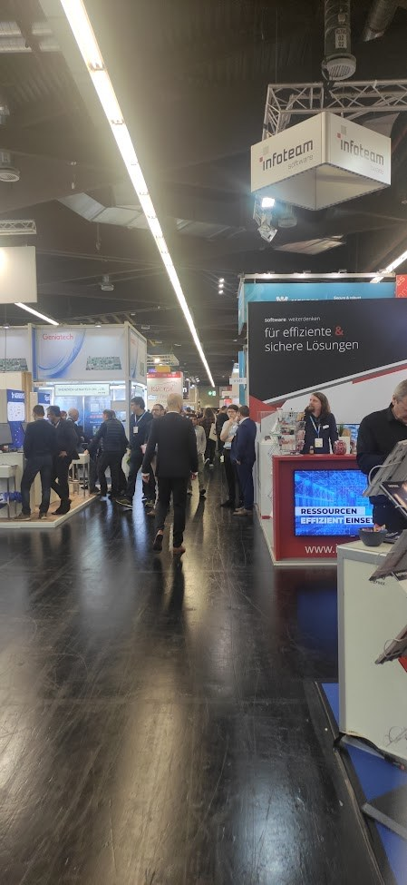
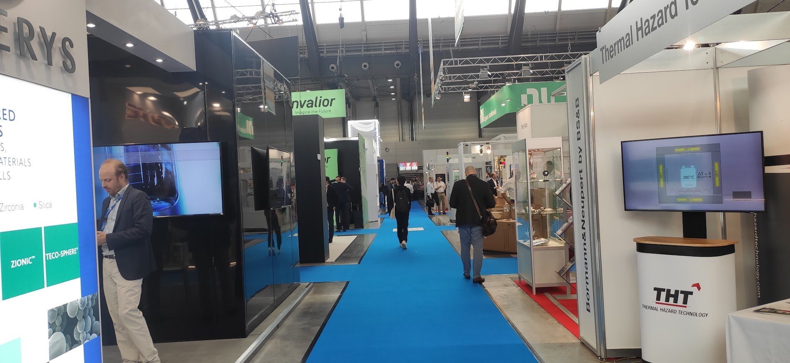

Exhibitions as a tool for winning customers and partners: Embedded World 2023 and The Battery Show 2023
In brief
A compact practical memo based on trips to Embedded World 2023 and The Battery Show 2023: how to prepare, who to bring, and how to convert contacts into actual partnerships.
Main takeaways
- An exhibition is not “a trip to look around.” It is a managed process: preparation → contacts → follow-up → partnership work.
- The strongest team setup is often sales + architect / engineer; sometimes executive management is useful to finalize the next steps.
- Participation modes are different: exhibitor with a booth requires much more preparation, but a well-prepared visitor scout can also be highly effective.
- Daily follow-up through LinkedIn plus structured lead notes dramatically improves conversion from acquaintances to real next steps.
Context
In a turbulent business environment, exhibitions remain a practical tool for building trust, finding partners, and reading the market. This note is based on my own experience from Embedded World 2023 in Nuremberg and The Battery Show 2023 in Stuttgart.
Exhibitor vs visitor
An exhibitor has a booth, demo materials, videos, handouts, a meeting schedule, and a physical “place of gravity.” A visitor moves across the floor, learns who is who, finds intersection points, and opens conversations. A powerful tactic is to have a small scouting team of visitors even if your company also has a booth.
Team composition
The setup that works most often is sales managers + architects. Sales opens the conversation, while architects and engineers move quickly into the technical substance. Senior management can then help close the loop by aligning next steps and setting the tone.
Materials
- For a booth: rented space, a coherent visual setup, screens or videos, a demo bench or prototype, flyers, business cards, and more than one presentation format.
- For visitors: business cards, light handouts, and basic logistics such as water, food, and coffee. This is underestimated surprisingly often.
- A dedicated attention trigger, such as a moving robot or another strong visual demo, can have a disproportionate effect on booth traffic.
On-site tactics
- Prepare a prioritized company list and book meetings in advance where possible.
- The first conversation usually starts from the counterpart’s product or service, then moves into who we are, what we do, and our engineering scale or competence.
- At the end of each day, find people on LinkedIn, send invitations, and capture structured notes.
After the exhibition
After the trip, the collected contacts and context have to enter the partner / BD workflow: follow-up, potential assessment, and alignment on next steps. That is the moment where “the exhibition” turns into a real system of work.
A note on Ukrainian technical events
My conclusion is that the full German-style format is hard to reproduce in Ukraine because the concentration of high-tech manufacturing is smaller. For local communities, smaller formats such as meetups and focused demo days often work better.
Artifact
This post is based on my preprint PDF: PREPRINT-EXHIBITs-HUMENNYI.pdf
Photos

